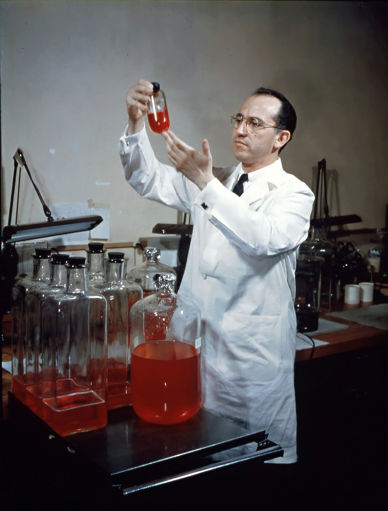
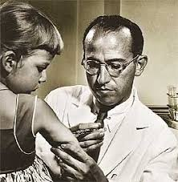

Nobel-díjas tudós.
Nobel-díjas tudós.A 2. világháború idején a társadalmi felelősség azt jelentette, hogy az emberek, közösségek és szervezetek igyekeztek emberiességet tanúsítani egy embertelen korszakban.
Sokan rejtegettek üldözötteket, segítették a zsidókat, élelmet és búvóhelyet adtak a rászorulóknak.
Voltak, akik ellenálltak a propagandának és az igazságtalanságnak.
A társadalmi felelősség ebben az időszakban gyakran személyes kockázatvállalást, bátorságot és erkölcsi kiállást jelentett.
Célja az emberi élet és méltóság megőrzése volt.
Raoul Wallenberg svéd diplomata a második világháború alatt a Budapestre akkreditált svéd nagykövetségen dolgozott.
1944 nyarán érkezett a magyar fővárosba, amikor a zsidók deportálása már javában zajlott.
Életét kockáztatva több tízezer magyar zsidót mentett meg a holokauszt borzalmaitól.
Diplomáciai mentességet élvező „védőútleveleket” (Schutz-Pass) állított ki, amelyekkel az üldözöttek svéd védelem alá kerültek.
Emellett biztonságos házakat szervezett, amelyek a svéd nagykövetség fennhatósága alá tartoztak.
Bátorsága és elkötelezettsége példaértékű.
1945 januárjában szovjet csapatok tartóztatták le.
Sorsáról azóta sem tudni bizonyosan, de hőstettei örökké fennmaradnak.
Szent-Györgyi Albert Nobel-díjas tudós.
Nem csupán a C-vitamin felfedezésével írta be magát a történelembe.
A II. világháborúban aktívan kiállt az emberiességért és segítette az üldözötteket.
Tudományát mindig a társadalom szolgálatába akarta állítani.
Jonas Salk megalkotta a gyermekbénulás elleni első hatékony oltást.
Amikor megkérdezték, miért nem szabadalmaztatja, azt mondta: „Hát lehetne szabadalmaztatni a Napot?”
Az oltást mindenki számára elérhetővé tette.
Óriási személyes haszon nélkül cselekedett.
Ez lett a társadalmi felelősség egyik legszebb példája.